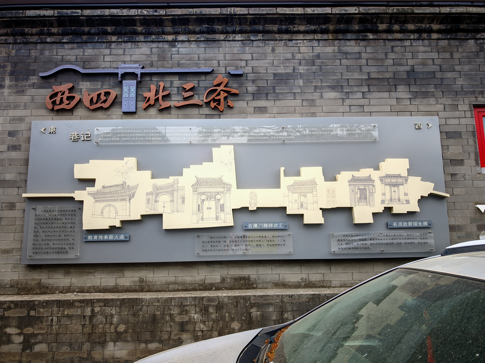
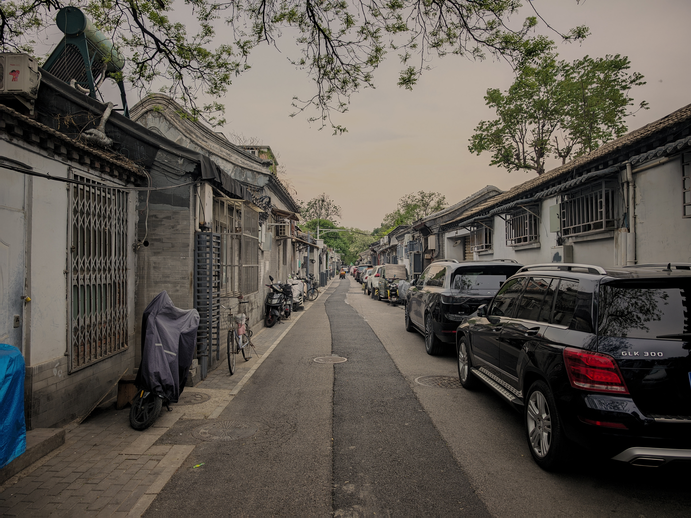
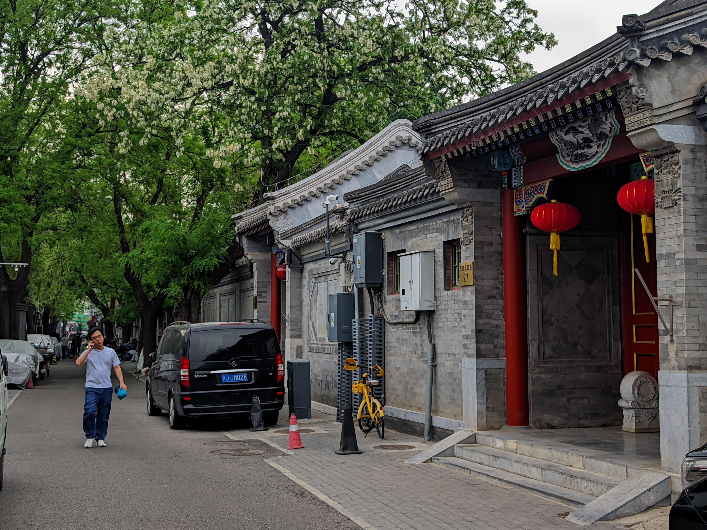

西四北三条胡同历史悠久，元、明属鸣玉坊，清属正红旗。明代时称为“箔子胡同”，清代是根据谐音称为“报子胡同”和“雹子胡同”。到1911年建立中华民国时称为“报子胡同”，直至1965年北京市整理地名时更改为西四北三条至今，现属西四北头条至八条四合院平房保护区。胡同全长516.98米，呈东西走向。

西四北四条胡同，元、明属鸣玉坊，清属正红旗。在明代由于紧靠驴肉胡同，所以成为加工兽皮的作坊聚集地，故称“熟皮”胡同。因熟制皮料臭气四溢，后又称臭皮胡同。1911年后以谐音改称受壁胡同。在1965年整顿地名时，改名为西四北四条，现属西四北头条至八条四合院平房保护区。胡同全长491.03米，呈东西走向。

西四北五条胡同，元、明属鸣玉坊，清属正红旗。明代称石老娘胡同，产婆旧称老娘，当时有石姓产婆居此而得名。在1965年整顿地名时，改名为西四北五条，现属西四北头条至八条四合院平房保护区。胡同全长466.61米，呈东西走向。
京剧“四大名旦”之一。1937年北平沦陷，日伪强令其组织义演为日军献机。程砚秋誓死不从：“宁死枪下，决不为日本人唱戏！”他托病隐居京西青龙桥，躬耕务农数年，直至抗战胜利才重返舞台。故居书房名“御霜簷”，院内柿子树为亲手所植。1958年因心脏病突发逝世，年仅54岁，是四大名旦中离世最早者。
近代藏书大家，曾任北洋政府教育总长。取苏东坡“万人如海一身藏”诗意筑“藏园”，藏书最盛时达20余万卷，多为宋金珍本，为民国北方私家藏书之冠。1937年，年迈的他奔走游说，促成国宝《平复帖》由张伯驹购藏，免于流落海外。其宅邸曾是陈寅恪、张伯驹等名流雅集之地，书香气韵绵延至今。
1940年，19岁的爱国青年冯运修在受璧胡同家中参与刺杀汉奸吴菊痴。事发后日伪军警破门围攻，他先焚毁机密文件，后持枪拒捕，与敌交火，身负重伤仍拒不投降，最终壮烈牺牲。这条491米的胡同，因他而刻下一段少年热血报国的悲壮记忆，至今令人动容。